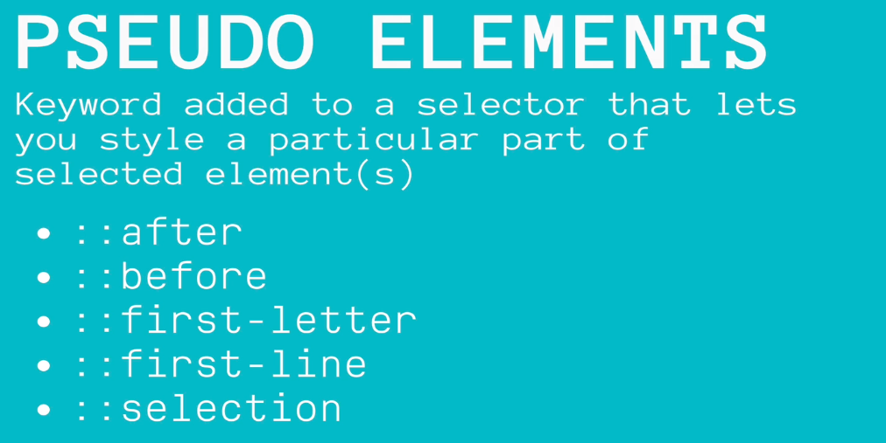

Important notes on html and css code
Block vs Inline Elements
There are two types of elements in html, Block or
Inline. Block level elements take up a whole "block" of
space, pushing the other content onto the next line, despite how much
content is inside it. Whereas Inline elements fit in alongside other
elements.
This is a normal div
For example <Div> is a block level element and
<span> is an example of inline element. E.g.
I am a span

CSS Selectors


Selecting Multiple Elements At Once
ID Selector
ID selector only selects the element with the corresponding ID, so it is
important the ID you give each element is UNIQUE. It is also important
not to have too many unnecessary IDs inside your html doc.

Class Selector
Class selector is similar to ID selector but slightly different as it
will select multiple (all) elements with the same class name.

Descendant Selector
This will select ALL the <a> tags listed somewhere
inside the <li>.
Adjacent Selector

Direct Child Selector
This will select the <li> that are direct child of
the <div>, so not nested somewhere inside the
<div> but a DIRECT child of it.

More types of CSS Selectors
Attribute Selector
You can find more examples of different attribute selectors on MDN.
More examples:
Psudo Class
You can read more on
MDN
Psudo Elements

Example
This will select the first letter of ALL h2 in the website and make it
bigger.
Display Property
You can use the display property to change an inline element to a block
element and vise versa.
If you usually try to use padding, margin and height etc on a inline element
such as a span, it will be ignored. However, if you use 'Inline-Block' (Green
divs) it will respect those attributes.
One thing to note is that you can hide elements by setting the display property
to none. Using JavaScript you can set certain conditions to when some elements
should be displayed and when some should be hidden. For example,some features are
available to only the admin and not regular users.
CSS Units
There are two types of different units used in CSS. Absolute units are fixed,
they remain the same no matter the screen size, however Relative units are
responsive to the screen size and scale up or down depending on what screen
size you are using to view the page.
ems

One of the issues with using ems is that it can stack when using elements that
are nested inside each other. For example you style a nested unordered list using
ems, each li element will inherit the text size from he parent being
the ul, and with each ul inside the nested list, the li elements will
grow.
rems